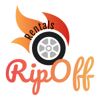

<mat-sidenav-container class="sidenav-container">
  <mat-sidenav #drawer class="sidenav" fixedInViewport="true"
      [attr.role]="(isHandset$ | async) ? 'dialog' : 'navigation'"
      [mode]="(isHandset$ | async) ? 'over' : 'side'"
      [opened]="!(isHandset$ | async)">
    <mat-toolbar class="mat-elevation-z8">
      <a class="logo" routerLink='/home'></a>
      <button
      mat-button type="button"
      (click)="drawer.toggle()"
      *ngIf="isHandset$ | async">Hide menu</button>
    </mat-toolbar>
    <mat-nav-list>
      <a mat-list-item routerLink='/customer'><mat-icon color="accent">directions_car</mat-icon>&nbsp;&nbsp;Rent a Car</a>
      <a mat-list-item href="#">Link 3</a>
      <a mat-list-item routerLink='/contact'><mat-icon color="accent">local_phone</mat-icon>&nbsp;&nbsp;Contact us</a>
    </mat-nav-list>
  </mat-sidenav>
  <mat-sidenav-content>
    <mat-toolbar color="primary">
      <button
        type="button"
        aria-label="Toggle sidenav"
        mat-icon-button
        (click)="drawer.toggle()"
        *ngIf="isHandset$ | async">
        <mat-icon aria-label="Side nav toggle icon">menu</mat-icon>
      </button>
      <a class="logo" routerLink='/home'></a>
      <span class="spacer">Ripoff Rentals</span>
      <app-login class="farright"></app-login>
    </mat-toolbar>
  <div class="content-container background">
    <router-outlet></router-outlet>
  </div>
  </mat-sidenav-content>
</mat-sidenav-container>
